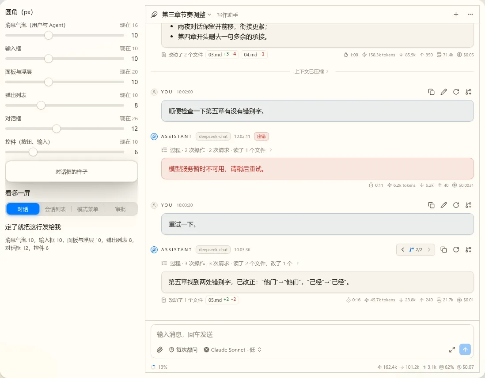
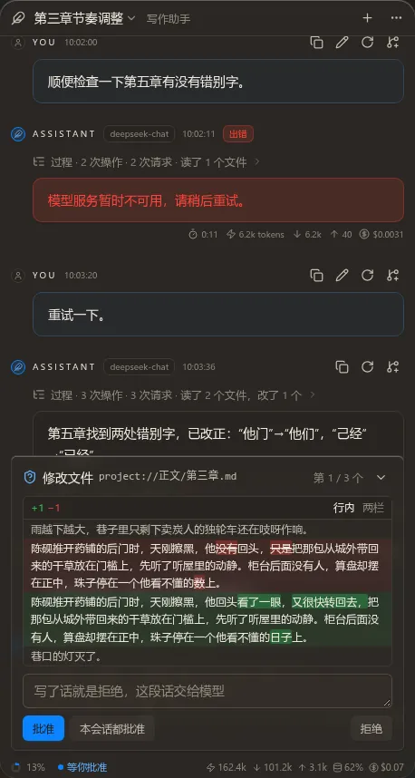
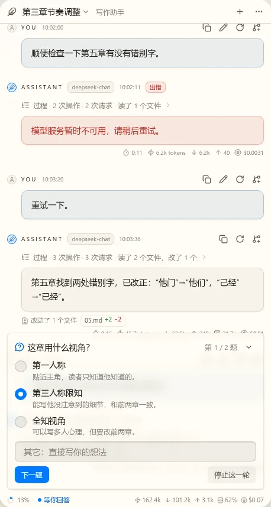
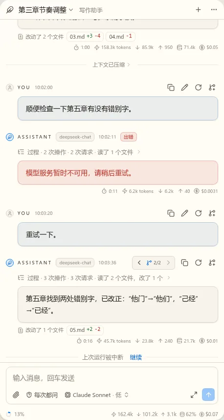
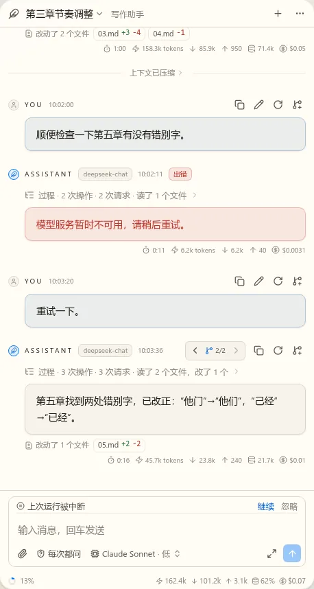
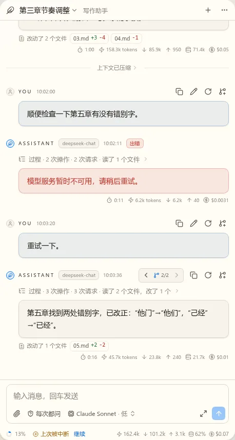
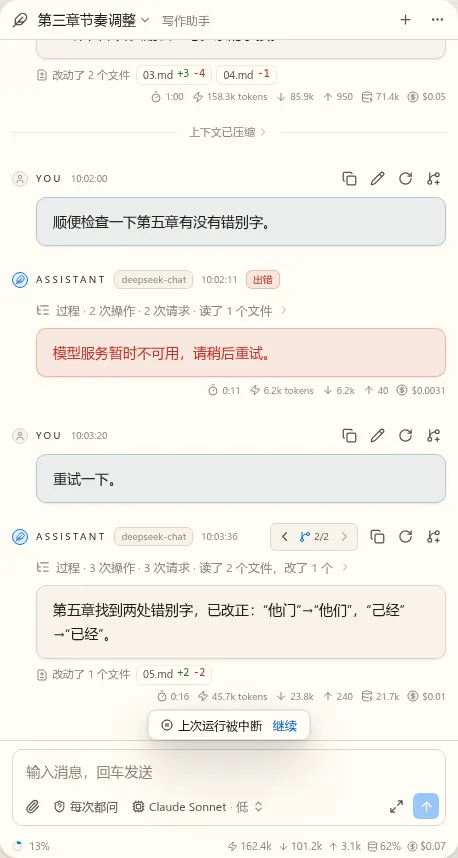
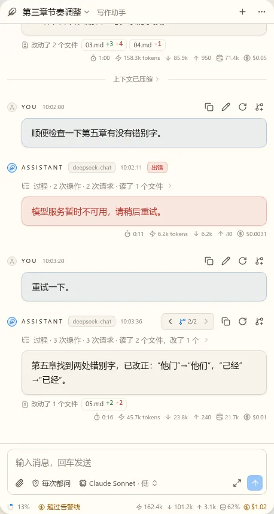

t17 对话界面第一版：静态稿（第 3 轮）
已定（第 2 轮）：状态栏用 B，DiffView 按方案做，命令审批可以。下面的状态栏都已换成 B。
待定1. 圆角：你自己调
Lab 控件：打开圆角调节器（只在这个草稿的开发服务上，这个会话结束它也会停）。六个滑块，右边的对话跟着变，能切到会话列表、模式菜单、审批看。值只在这个页面里生效。调好把左下角那行抄到下面或发给我。
起始值已按你说的把气泡、输入框、对话框调圆一点：气泡 10、输入框 10、面板 10、弹出列表 8、对话框 12、控件 6。
为什么上一轮 YOU 还是那么圆：用户气泡（.acv-user-bubble）和 Agent 气泡是两处各写死的 16px，我只改了后者。实现时两者走同一个 token。


待定2. 左右宽度对齐
现在所有东西用同一组左右边距（12px）：顶栏、气泡的右边、输入框、向导、会话列表、模式菜单、状态栏。会话列表和模式菜单改成和输入框一样宽。
顺便查到一个真问题：之前气泡右边比输入框短 14px，因为消息流给滚动条留了固定位置（scrollbar-gutter: stable），输入框没有。这轮去掉了；代价是滚动条出现时内容会窄一点，现在这个滚动条是浮动的，实际影响要到实现时再确认。


待定3. 浮动向导的表面
按你选的改成浮动：盖在消息流上，不占高度。消息流底部留出同样的高度，最后一条能滚出来。还是替换输入框的位置。





推荐：A。半透明时要读的 diff 和背后的正文混在一起，读不清；磨砂既有层次，也和弹层一致。
待定4. 收起之后
标题行右边的箭头收起。收起后是一条磨砂小条，占输入框的位置，写着等什么、第几个，点开继续。收起时不提供批准按钮：没看 diff 就批，正是收起最容易造成的误操作。这时不能发新消息，要先处理它。

待定5. 提示（原来的横幅）
换了放的位置，不再是一条独立的横幅。下面都是“上次运行被中断”：








混用：被中断是这段对话里发生的事，放消息流，用 A；费用告警是一直存在的状态，放状态栏，费用那一项变色，用 C（下图）。


推荐：混用。两件事性质不同，不必长一个样子。